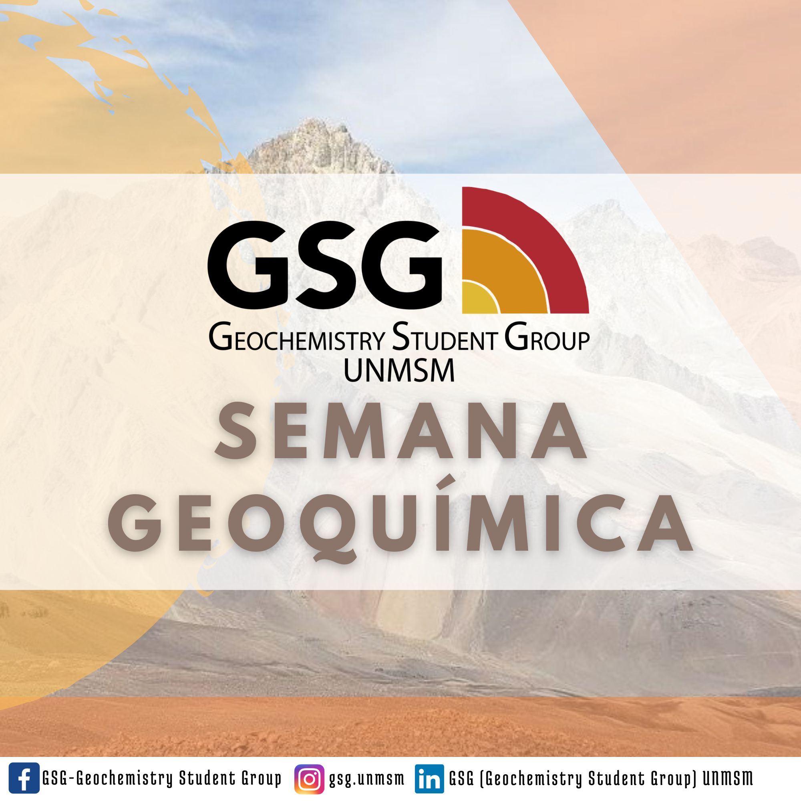

Actividades Principales

Ponencias
Orientadas a la geoquímica aplicada a la exploración mineral, geoquímica ambiental, hidrogeoquímica y caracterización de depósitos minerales. Se abordan metodologías de interpretación geoquímica, fertilidad magmática, relaciones geoquímicas en sistemas minerales, drenaje ácido de roca, evaluación de relaves mineros y aplicaciones en exploración de pórfidos, skarn y otros sistemas mineralizados.

Talleres
Uso de herramientas para análisis estadístico y geoquímico de datos, detección de outliers y visualización mediante R, Python, GCDkit, IOGAS y SGeMS.
Círculos de Estudio
Revisión y análisis crítico de literatura científica y estudios de caso mineralógicos y geoquímicos con énfasis en metodologías analíticas e interpretación técnica.